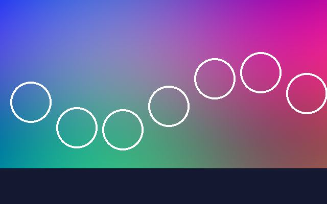

一个标签就能用，没有构建步骤。
每个部件都有独立入口，只为用到的部分付出体积。
键盘可达、读屏友好，尊重“减少动态效果”。
进度条走满后自动切到下一个标签；悬停、聚焦或离开屏幕时暂停，也可以按暂停键。
十八个新部件：六个文档与界面部件、六个数据与交互组件、六个背景与文字动效。它们都在原生元素上增强，没有脚本时内容照常显示；开启“减少动态效果”后直接停在结果上。
一个标签就能用，没有构建步骤。
每个部件都有独立入口，只为用到的部分付出体积。
键盘可达、读屏友好，尊重“减少动态效果”。
进度条走满后自动切到下一个标签；悬停、聚焦或离开屏幕时暂停，也可以按暂停键。
npm i motionary
pnpm add motionary
yarn add motionary
同一个 group 的代码标签一起切换；复制按钮变成对勾。
import 'motionary/widgets/code-tabs';
import 'motionary/widgets/code-tabs'; // pnpm
import 'motionary/widgets/code-tabs'; // yarn
切换上一个，这个也跟着变。
点“没有”会先追问。不会发送到任何地方，页面自己读取事件。
分享目标沿弹簧展开，Esc 或点外面收起；加 native 使用系统分享面板。
点文字就能改；回车保存并闪一下，Esc 还原，F2 也能打开。
按权重决定大小，依次浮现后轻轻浮动；悬停一个时其余变暗。
扫入出现；聚焦后方向键按天、按周移动，每格读出日期和数值。
扇区依次画出，总数递增；图例是按钮，悬停或聚焦时突出对应扇区。
平均分递增、星星填充，每个星级的条形按占比生长；条形可点，用来筛选。
拖动把手排序；键盘：空格拿起，方向键移动，空格放下，Esc 放回原处。

指针移到图上即可放大；聚焦后用方向键移动，+ / − 调整倍数。
真正的复选框；全部勾上时进度环弹一下，标题变化。
流星划过区块背景，离开屏幕时停止。
向你滚来的合成波网格，可加条纹太阳。
光脉冲沿曲线在节点之间流动；布局变化时自动重画。
图标在两条轨道上反向环绕并保持正立；悬停或聚焦时暂停。
悬停或聚焦时每个字母依次翻滚；读屏只读一次完整文字。
点击处向外扩散一圈光；也会自己产生涟漪，离开屏幕时停止。